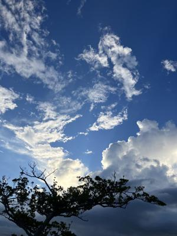
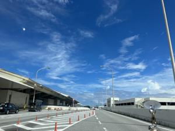
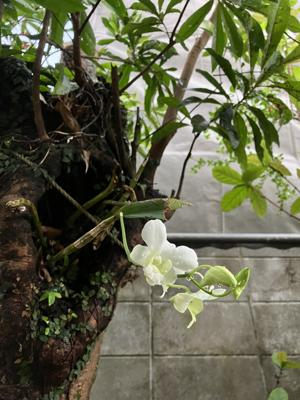

うるがいの話 ある日
最新: 今日は何日【うるがいの話 ある日】とは 一日だけのプログです
『うるがいの話』の最新一日だけのプログで、通信料が少なく経済的だ。カニの画像をクリックすると全ての日付が載る『うるがいの話』サイトを表示します
|
|
【うるがいの話】 うるがい(ｳﾙｶﾞｲ urugai)とは、『もずくがに』の名前でとても大きくなります。 |
|---|---|
|
|
【カミマヤーの話】 猫のことを方言でマヤーといいます。カミマヤー（kamimayaa）とは、神の猫のことです。 |
|
【たながぁの音楽】 たながぁ（ﾀﾅｶﾞｰ tanagaa）とは手長えびのことで、何種類かあり大きいのは車 エビぐらいになります。 |

|
【ぶながぁの話】 ぶながぁ(ﾌﾞﾅｶﾞｰ bunagaa)とは、赤い髪の毛、赤い身体、そして身長は１ｍ２０ｃｍ ぐらい、川の蟹を食べているの目撃された。場所は沖縄県国頭郡大宜味村のと ある村僕の隣近所に住んでいる爺さんから、聞いた話です。 |
|
|
【ギーマの話】 ギーマ(giima)とは、山原の里山に咲くスズランに似た、 花を付けます。実は食べられます、 気が付くと口の周りが紫になっています。 |
2023年09月22日 (金）今日は何日
16:13
 
今日でなくてもいい 佐野洋子著 エッセイコレクションより引用
別の友人は、徘徊する母親の腕と自分の腕とをひもでまきつけて、何年も看護
をし、あびるように酒を飲んでいた。そして母の通夜の晩、脳出血で自分も死
んでしまった。その時も私は感想を持てなかった。どんな感想も言葉もその事
実の前に無力だった。人は長生きしすぎたのだ。
お義母さんは、『今日は何日、何曜日？』と何度もヨメに聞くらしい。そして
答えると『バカ老人になった、生きてもしょうもない』と何度もこれを繰り返
す。ケアマネジャーと相談すると、老人ホームを変えたりするより、『特養』
に申し込んでいたほうがいいと、アドバイスをもらう。
特別養護老人ホームは、在宅での生活が困難な高齢者に対し介護を提供する施設
で、略して「特養（以下、特養）」とも呼ばれています。

１６時０４分 ビットコインの総資産 ￥１１、４５７（↓１９５）